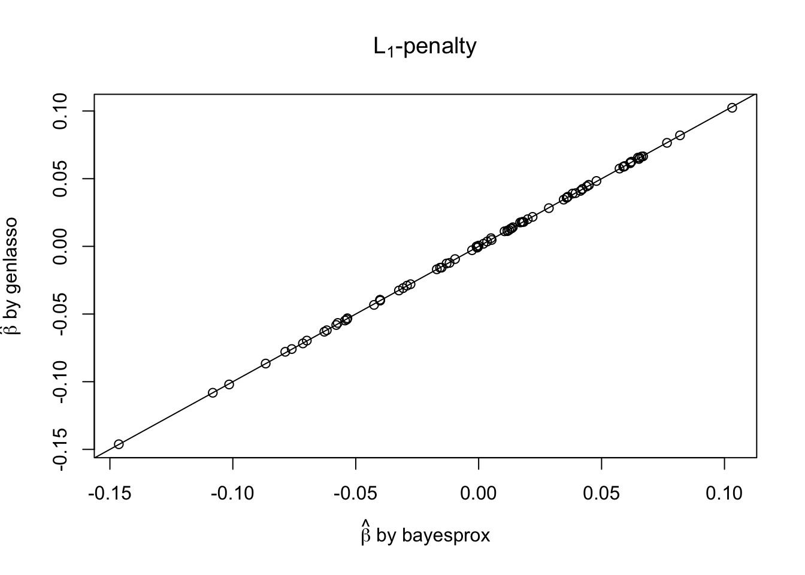
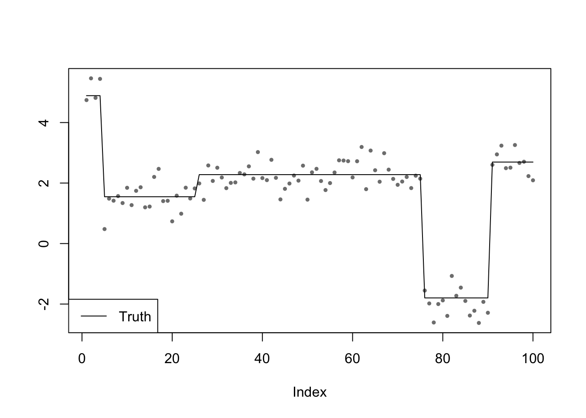
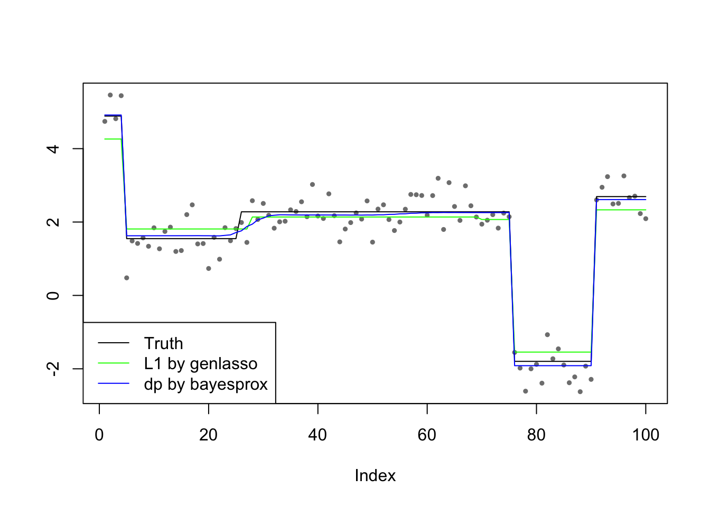
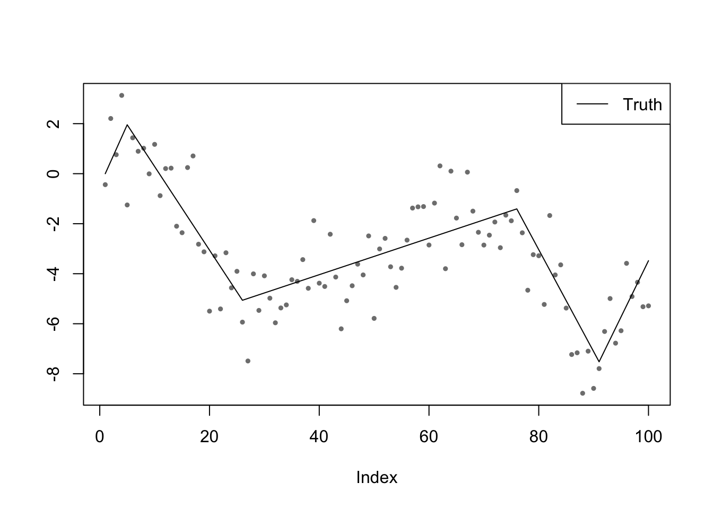
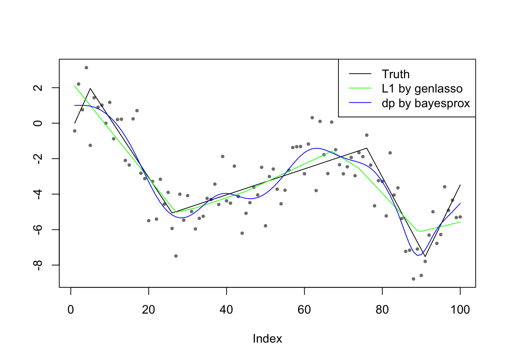

Last updated: 2019-04-10
workflowr checks: (Click a bullet for more information) ✔ R Markdown file: up-to-date
Great! Since the R Markdown file has been committed to the Git repository, you know the exact version of the code that produced these results.
✔ Environment: empty
Great job! The global environment was empty. Objects defined in the global environment can affect the analysis in your R Markdown file in unknown ways. For reproduciblity it’s best to always run the code in an empty environment.
✔ Seed:
set.seed(20190408)
The command set.seed(20190408) was run prior to running the code in the R Markdown file. Setting a seed ensures that any results that rely on randomness, e.g. subsampling or permutations, are reproducible.
✔ Session information: recorded
Great job! Recording the operating system, R version, and package versions is critical for reproducibility.
✔ Repository version: 89b5ff3
wflow_publish or wflow_git_commit). workflowr only checks the R Markdown file, but you know if there are other scripts or data files that it depends on. Below is the status of the Git repository when the results were generated:
Ignored files:
Ignored: .Rhistory
Ignored: .Rproj.user/
Ignored: docs/figure/
Unstaged changes:
Modified: _workflowr.yml
The objective is as follows \[
\min\limits_{\beta} \frac12\|y - X\beta\|_2^2 + \lambda\Phi(D\beta)
\] where \(\Phi(\cdot): \mathbb{R}^m \to \mathbb{R}\) is a penalty function in the form of \[
\Phi(x) := \sum_{i = 1}^m\phi(x_i)
\] where \(\phi(\cdot): \mathbb{R} \to \mathbb{R}\) can be in many forms. Note that when \(\phi(\cdot)\) is convex, the whole objective is convex. The two representative examples considered here are \(L_1\): \(\phi(\cdot)=|\cdot|\) (convex) and double-pareto: \(\phi(\cdot) = \log(1+|\cdot|)\) (nonconvex). The \(L_1\) case has been solved by genlasso.
\(X, D, y\) consist of random numbers. \(\lambda = 10\).
source("../code/bayesprox.R")set.seed(7)
X <- matrix(rnorm(100 * 80), 100)
D <- matrix(rnorm(50 * 80), 50)
y <- rnorm(100)
fit.bayesprox <- bayesprox(y, X, D, lambda = 10, penalty = "l1")
fit.genlasso <- genlasso::genlasso(y, X, D)
beta.bayesprox <- fit.bayesprox$beta
beta.genlasso <- coef(fit.genlasso, lambda = 10)$beta
plot(beta.bayesprox, beta.genlasso,
xlab = expression(paste(hat(beta), " by bayesprox")),
ylab = expression(paste(hat(beta), " by genlasso")),
main = expression(paste(L[1], "-penalty")))
abline(0, 1)
$X = I, D = $ 1-difference matrix. \(\lambda\) is chosen by genlasso using CV.
set.seed(7)
n <- 1e2
p <- 0.95
sigma <- 0.5
b <- 5
y <- x <- v <- c()
x[1] <- runif(1, -b, b)
for (i in 1 : (n - 1)) {
v[i] <- rbinom(1, 1, 1 - p) * runif(1, -b, b)
x[i + 1] <- x[i] + v[i]
}
y <- x[1 : n] + rnorm(n, 0, sigma)
plot(y, pch = 19, cex = 0.5, col = "grey50", ylab = "")
points(x, pch = 19, cex = 0.5, type = "l")
legend("bottomleft", lty = 1, "Truth")
X <- diag(n)
D <- genlasso::getD1d(n)
fit.genlasso = genlasso::trendfilter(y, ord = 0)
cv = genlasso::cv.trendfilter(fit.genlasso)Fold 1 ... Fold 2 ... Fold 3 ... Fold 4 ... Fold 5 ... lambda <- cv$lambda.1se
beta.genlasso <- coef(fit.genlasso, lambda)$betafit.bayesprox <- bayesprox(y, X, D, lambda, penalty = "dp", par = 1)
beta.bayesprox <- if (fit.bayesprox$converged) fit.bayesprox$beta else fit.bayesprox$beta.mat[, which.min(fit.bayesprox$obj_vec)]
# beta.bayesprox <- fit.bayesprox$beta
plot(y, pch = 19, cex = 0.5, col = "grey50", ylab = "")
points(x, pch = 19, cex = 0.5, type = "l")
points(beta.genlasso, pch = 19, cex = 0.5, col = "green", type = "l")
points(beta.bayesprox, pch = 1, cex = 0.5, col = "blue", type = "l")
legend("bottomleft", lty = 1, c("Truth", "L1 by genlasso", "dp by bayesprox"), col = c("black", "green", "blue"))
cat("MSE of y")MSE of ysqrt(mean((y - x)^2))[1] 0.4184231cat("MSE of genlasso")MSE of genlassosqrt(mean((beta.genlasso - x)^2))[1] 0.2612021cat("MSE of bayesprox")MSE of bayesproxsqrt(mean((beta.bayesprox - x)^2))[1] 0.1115041cat("Objective of y")Objective of yobj_fun(y, y, X, D, lambda, penalty = "dp", par = 1)[1] 134.7905cat("Objective of truth")Objective of truthobj_fun(x, y, X, D, lambda, penalty = "dp", par = 1)[1] 27.00826cat("Objective of genlasso")Objective of genlassoobj_fun(beta.genlasso, y, X, D, lambda, penalty = "dp", par = 1)[1] 29.12209cat("Objective of bayesprox")Objective of bayesproxobj_fun(beta.bayesprox, y, X, D, lambda, penalty = "dp", par = 1)[1] 27.13065$X = I, D = $ 2-difference matrix. \(\lambda\) is chosen by genlasso using CV.
set.seed(7)
n <- 1e2
p <- 0.95
sigma <- 1.5
b <- 0.5
y <- x <- v <- c()
x[1] <- 0
v[1] <- runif(1, -b, b)
for (i in 1 : (n - 1)) {
x[i + 1] <- x[i] + v[i]
ind <- rbinom(1, 1, p)
v[i + 1] <- ind * v[i] + (1 - ind) * runif(1, -b, b)
}
y <- x[1 : n] + rnorm(n, 0, sigma)
plot(y, pch = 19, cex = 0.5, col = "grey50", ylab = "")
points(x, pch = 19, cex = 0.5, type = "l")
legend("topright", lty = 1, "Truth")
X <- diag(n)
D <- genlasso::getDtf(n, 1)
fit.genlasso = genlasso::trendfilter(y, ord = 1)
cv = genlasso::cv.trendfilter(fit.genlasso)Fold 1 ... Fold 2 ... Fold 3 ... Fold 4 ... Fold 5 ... lambda <- cv$lambda.1se
beta.genlasso <- coef(fit.genlasso, lambda)$betafit.bayesprox <- bayesprox(y, X, D, lambda, penalty = "dp", par = 1)
beta.bayesprox <- if (fit.bayesprox$converged) fit.bayesprox$beta else fit.bayesprox$beta.mat[, which.min(fit.bayesprox$obj_vec)]
# beta.bayesprox <- fit.bayesprox$beta
plot(y, pch = 19, cex = 0.5, col = "grey50", ylab = "")
points(x, pch = 19, cex = 0.5, type = "l")
points(beta.genlasso, pch = 19, cex = 0.5, col = "green", type = "l")
points(beta.bayesprox, pch = 1, cex = 0.5, col = "blue", type = "l")
legend("topright", lty = 1, c("Truth", "L1 by genlasso", "dp by bayesprox"), col = c("black", "green", "blue"))
cat("MSE of y")MSE of ysqrt(mean((y - x)^2))[1] 1.255269cat("MSE of genlasso")MSE of genlassosqrt(mean((beta.genlasso - x)^2))[1] 0.6538715cat("MSE of bayesprox")MSE of bayesproxsqrt(mean((beta.bayesprox - x)^2))[1] 0.5134303cat("Objective of y")Objective of yobj_fun(y, y, X, D, lambda, penalty = "dp", par = 1)[1] 3242.834cat("Objective of truth")Objective of truthobj_fun(x, y, X, D, lambda, penalty = "dp", par = 1)[1] 137.1209cat("Objective of genlasso")Objective of genlassoobj_fun(beta.genlasso, y, X, D, lambda, penalty = "dp", par = 1)[1] 110.5657cat("Objective of bayesprox")Objective of bayesproxobj_fun(beta.bayesprox, y, X, D, lambda, penalty = "dp", par = 1)[1] 175.9533sessionInfo()R version 3.4.3 (2017-11-30)
Platform: x86_64-apple-darwin15.6.0 (64-bit)
Running under: macOS High Sierra 10.13.6
Matrix products: default
BLAS: /Library/Frameworks/R.framework/Versions/3.4/Resources/lib/libRblas.0.dylib
LAPACK: /Library/Frameworks/R.framework/Versions/3.4/Resources/lib/libRlapack.dylib
locale:
[1] en_US.UTF-8/en_US.UTF-8/en_US.UTF-8/C/en_US.UTF-8/en_US.UTF-8
attached base packages:
[1] stats graphics grDevices utils datasets methods base
loaded via a namespace (and not attached):
[1] workflowr_1.1.1 Rcpp_1.0.0 lattice_0.20-35
[4] digest_0.6.15 rprojroot_1.3-2 MASS_7.3-50
[7] R.methodsS3_1.7.1 grid_3.4.3 genlasso_1.3
[10] backports_1.1.2 git2r_0.23.0 magrittr_1.5
[13] evaluate_0.10.1 stringi_1.1.6 whisker_0.3-2
[16] R.oo_1.22.0 R.utils_2.7.0 Matrix_1.2-12
[19] rmarkdown_1.9 tools_3.4.3 stringr_1.3.0
[22] igraph_1.2.1 yaml_2.1.18 compiler_3.4.3
[25] pkgconfig_2.0.1 htmltools_0.3.6 knitr_1.20 This reproducible R Markdown analysis was created with workflowr 1.1.1